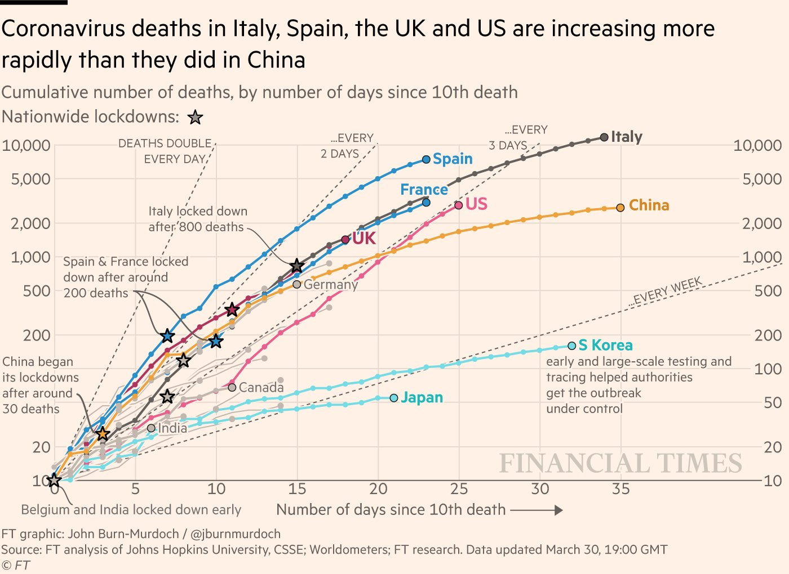

Chapter 8 Tues Jan 25: Exponential growth - continuous time
The deadline to submit your answers is Tues Jan 31.
8.1 Required reading
Vandermeer, J.H., Goldberg, D.E., 2013. Population Ecology: First Principles (Second Edition). Princeton University Press, Princeton, United States. p4-8. Link
Recall the equation for exponential growth:
\[\begin{equation} N(t) = N(0)e^{rt} \tag{7.2} \end{equation}\]
8.2 Questions
- Calculate the formula for the doubling time for continuous time exponential growth (equation (7.2)). This is the time for the population to double in size. The value of \(N(0)\), the population size at \(t=0\) doesn’t matter as long as it is a positive number. When the population has doubled, \(N(t) = 2N(0)\). To answer this question you need to find \(t\) such that \(N(t) = 2N(0)\). You may need to revisit some rules about working with logarithms to complete this question (i.e. see here, specifically the Product, Quotient, Power, and Root table. Also recall, \(Ln(e^x) = x\)). Please show your work. [2 marks]

Consider the plot above. Let \(N(0) = 10\). Using the formula (7.2), with the value of \(r\) such that deaths double every day, when \(t\) = 10 days later, what is the value of \(N(t)\)? [check your answer matches the graph] [1 mark]
Let \(N(0) = 10\). Using the formula (7.2), with the value of \(r\) such that deaths double every 3 days, when \(t\) = 30 days later, what is the value of \(N(t)\)? [check your answer matches the graph] [1 mark]
Let \(N(0) = 10\). Using the formula (7.2), with the value of \(r\) such that deaths double every 7 days, when \(t\) = 35 days later, what is the value of \(N(t)\)? [check your answer matches the graph] [1 mark]